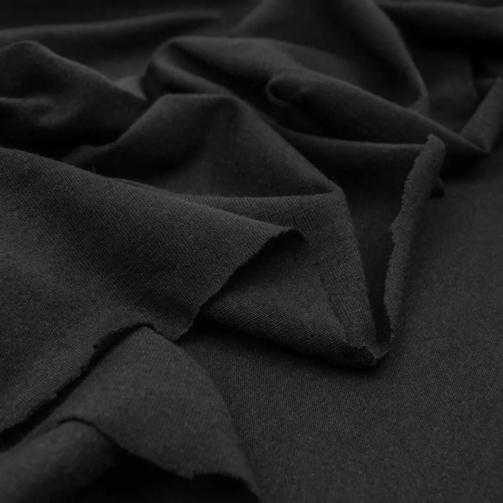
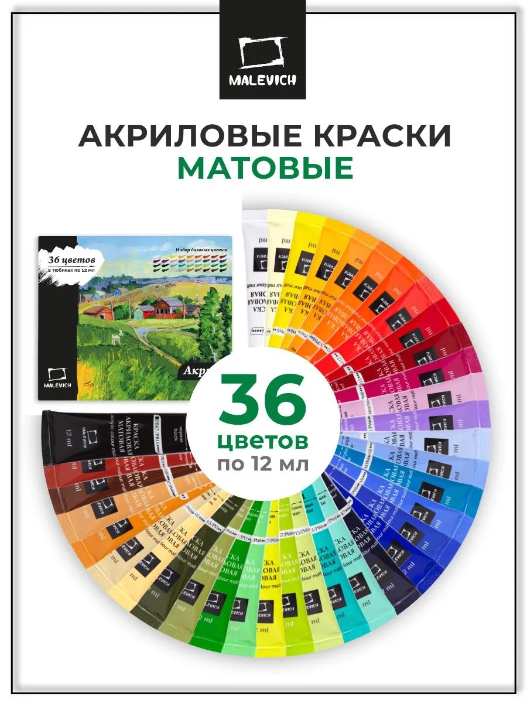
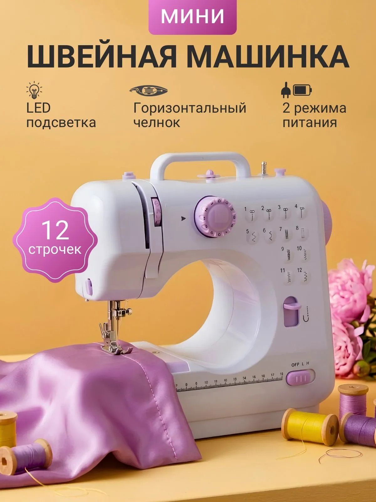

1 / 5
Ткани и кружево
В основном я использую тонкий трикотаж или кулирку, так как эта ткань тянется и легче шить, также использую атласную ткань и ленты из аталаса, кружево разного вида и искуственную кожу.
МОЯ ТВОРЧЕСКАЯ ПОЛОЧКА
Собираю здесь то, что использую для репеинта, пошива одежды и создания аксессуаров. Все материалы покупаю на OZON, вы сможете легко найти по фото

В основном я использую тонкий трикотаж или кулирку, так как эта ткань тянется и легче шить, также использую атласную ткань и ленты из аталаса, кружево разного вида и искуственную кожу.

Материалы бюджетные, краски матовые достаточно хорошо ложатся, кисти я использую маникюрные и если нужно тоньше, то просто подстригаю ворс на кисти. И конечно же каждый этап закрепляю Ms. super clear matt. Волосы покупаю на авито это либо саран, либо молочный шелк.

В основном шью вручную, но иногда пользуюсь мини машинкой, также клей кристалл, обычные кусачки и заказываю много разных деталей 3d печати. Это в основном обувь, пояс, браслеты и так далее.